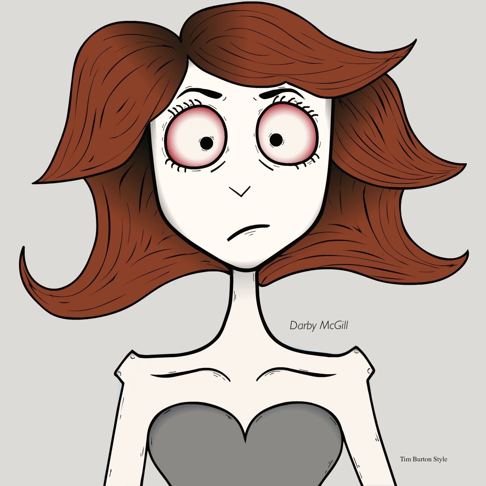
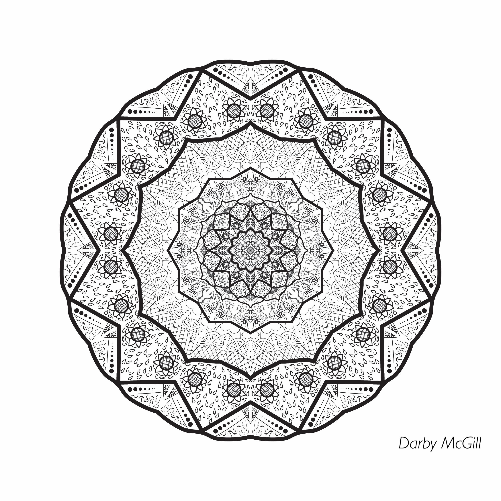
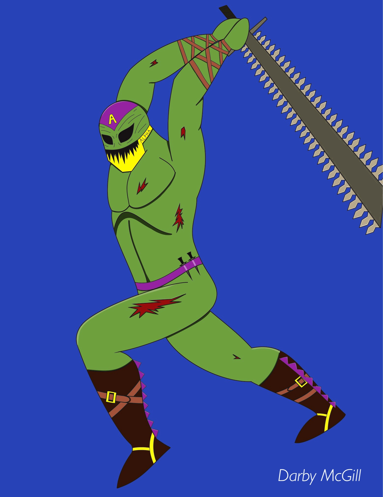

Digital Portrait Created Using Adobe Photoshop
This project involved creating a detailed digital portrait using Adobe Photoshop, focusing on lighting, texture, and color correction.

Digital Artwork Created Using Adobe Illustrator
This project involved designing a vector-based artwork using Adobe Illustrator, emphasizing clean lines, geometric shapes, and a cohesive color palette.

Digital Illustration Created Using Procreate
This project involved creating a digital illustration using Procreate, focusing on character design and storytelling through visual elements.

Web Development Project
This project involved building a responsive website using HTML, CSS, and JavaScript, with a focus on user experience and modern design principles.
View Project